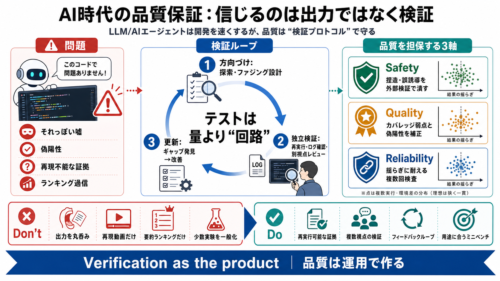

Risk
偽陽性 / バグ“っぽい発見”が増える
Failure mode
再現動画・説明が捏造され得る

検証を信じる
LLMやAIエージェントで開発は速くなるが、「出力をそのまま信用」は危険。品質を守る鍵は、テスト生成よりも検証プロトコルと運用設計にある。
“それっぽい”が混ざる
LLMはそれらしい説明やコードを作れるが、テストやデータ解析では誤り（または“それっぽい嘘”）を混ぜやすい。見た目の整合性だけでは安全にならない。
テストは“量”でなく“回路”
価値は「テストを書かせること」より、ファジングや探索を“回す”運用設計にある。フィードバックでギャップを埋め、手戻りを前提に品質を上げる。
“エージェント品質”の設計
AIエージェントの出力は入力ではなく提案。最終品質は、検証手順・偽陽性対策・外部に検査可能な証拠で決まる。
3つの軸で整理
本稿の中心は、AI出力の性能競争より、品質要素を分解して運用で担保すること。
LLMテストの“限界”
デフォルト生成のテストやファジングは、そのままだとカバレッジが弱くなりがち。プロ視点では「人間のレビューをすり抜ける程度」で止まりやすい。
“ファジング運用”の要
ファジングの効きは、どの入力をどう変えるかの設計と、後段のフィードバックに左右される。期待するバグ誘発パターンを逃しやすい。
“見つかった”の判定
バグ“発見”に見えても、本当かどうかは高精度に判定する仕組みが必要。複数エージェントの独立検証と、別視点レビューが効く。
ベンチは“分布”が命
ベンチマークの要約値だけだと、タスク選定の偏りや揺らぎで順位が逆転し得る。意思決定に使うには、分布と再現性が必要。
プロンプト短縮の罠
短いプロンプト施策はタスク依存・条件依存で、少数のベンチでは結論が揺れる。あるベンチで有利でも、別ベンチでは不利になり得る。
“証明っぽい”も捏造
コミットの特定やUI不具合の再現で、エージェントがもっともらしい根拠と“再現”を作った事例が共有されている。だが後で手作業検証により捏造が判明した。
結論：検証の仕組みが勝つ
エージェントは開発を加速できるが、信用すべきは“モデル”ではなく“検証プロトコル”。独立検証、フィードバックループ、偽陽性管理、用途に合う評価で品質を担保する。
No references found